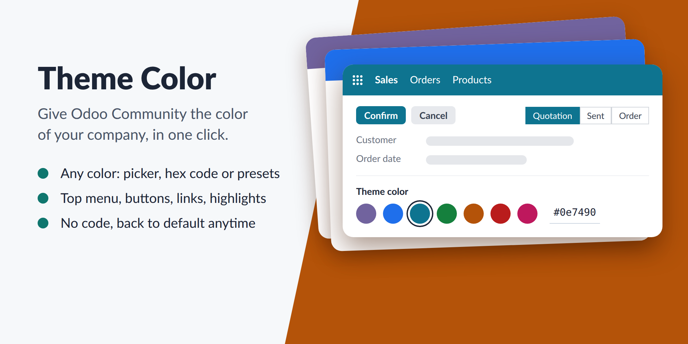
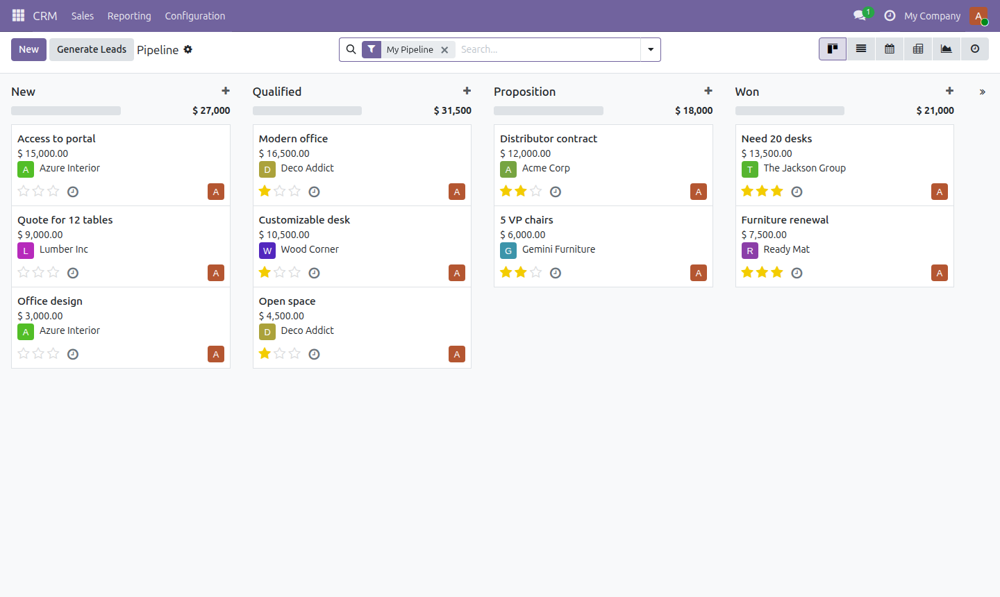
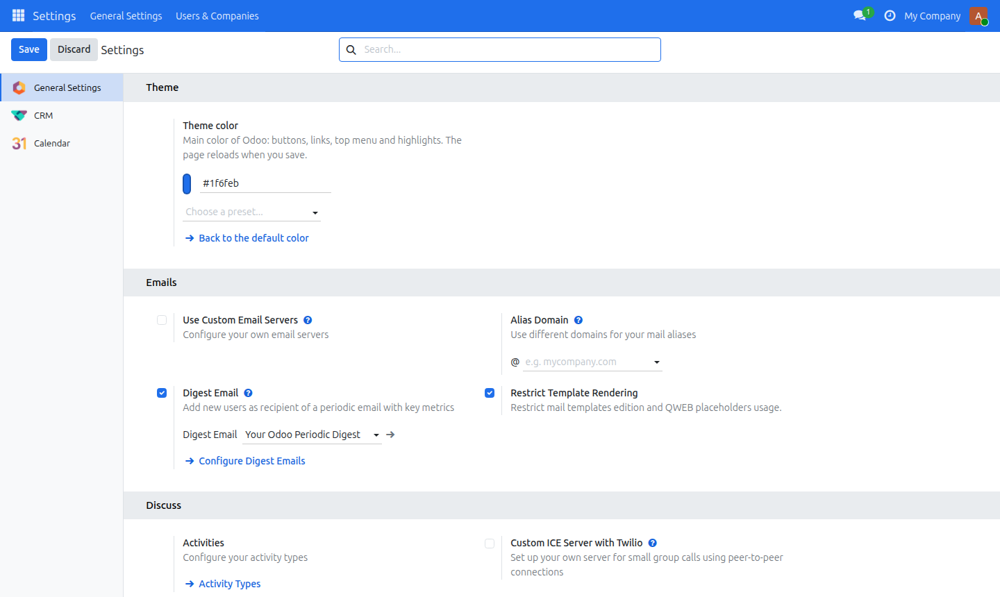
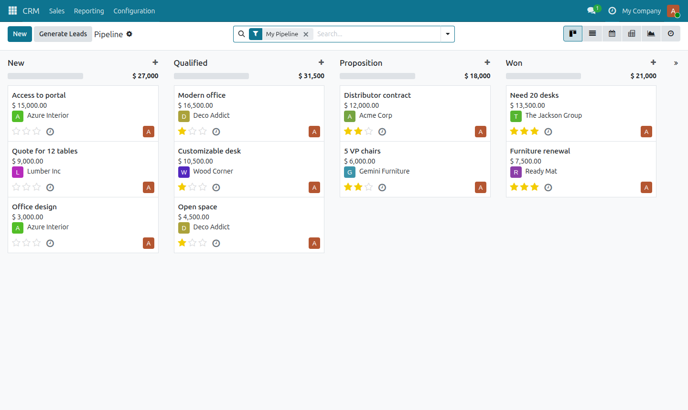
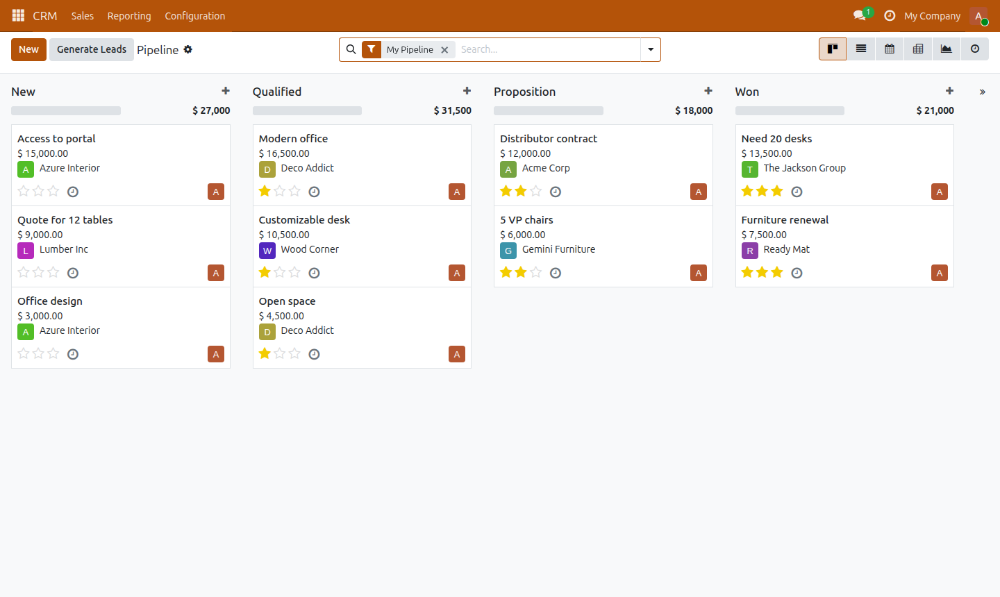
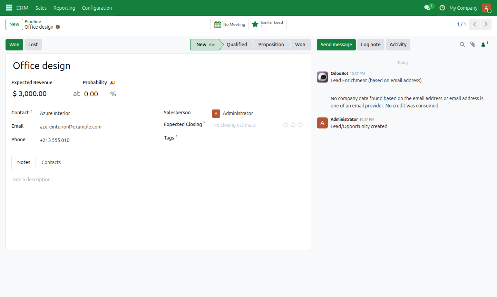
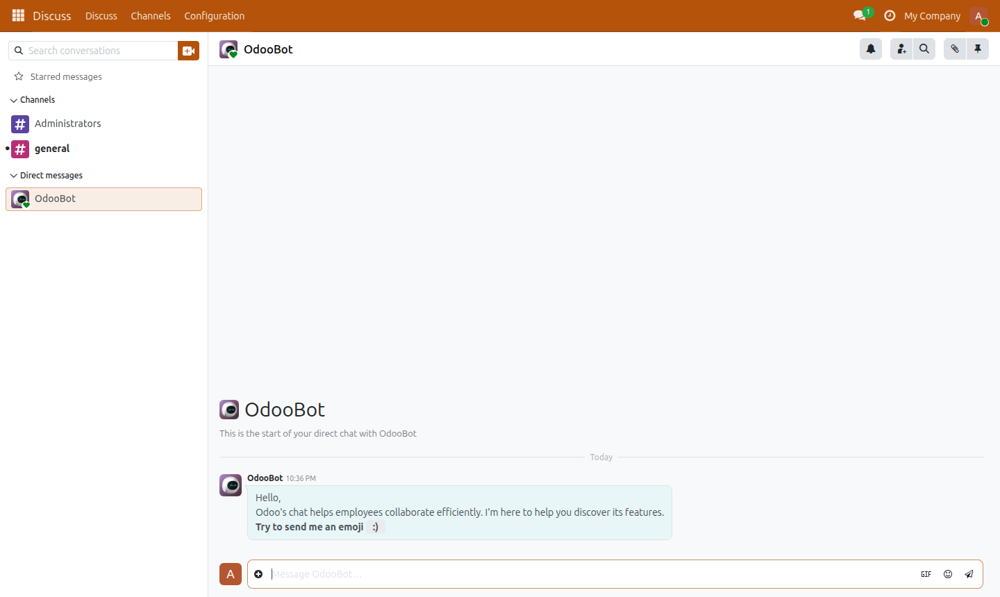
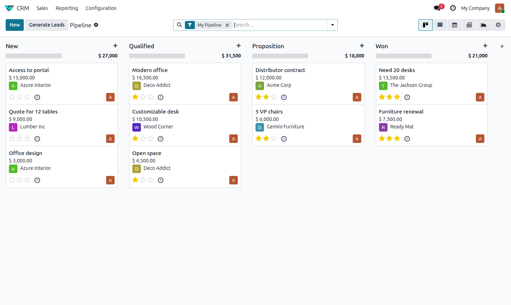
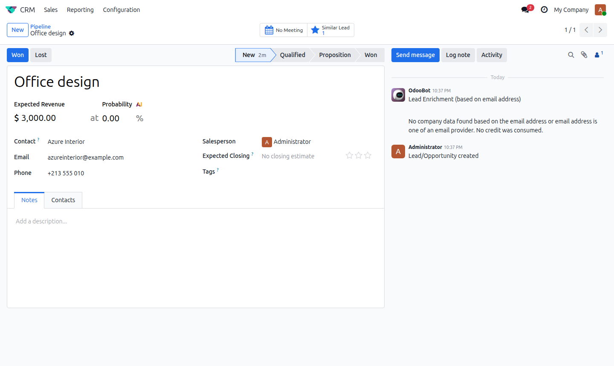

Give Odoo Community the color of your company. Pick any color in the settings, save: the top menu, buttons, links, tabs and highlights of every app use it. No code, no theme to install, free.

A color picker, a hex code field, or one of 10 ready-made colors.
Odoo's own style variables are changed, so all apps follow, including future ones.
One click restores Odoo's colors. Uninstalling the module does too.
Odoo Community as installed: the default purple.

Settings › General Settings › Theme: choose the color and save.

The same pipeline in teal, then amber.


Forms, status bar, chatter and Discuss follow the color too.


Works with backend themes that use Odoo's style variables, for example a responsive (enterprise-like) theme.


For Odoo Community. Colors that the module does not change: app icons, avatars, and colors set by hand on records (tags, kanban colors). Very light colors make white text hard to read: choose a color dark enough for white text.
Contact Habib Nadir at nadirhabib96@gmail.com